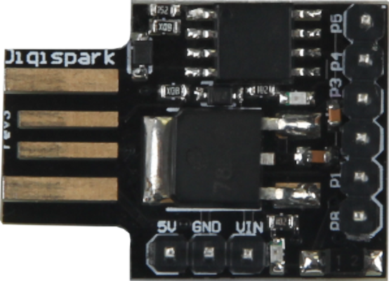
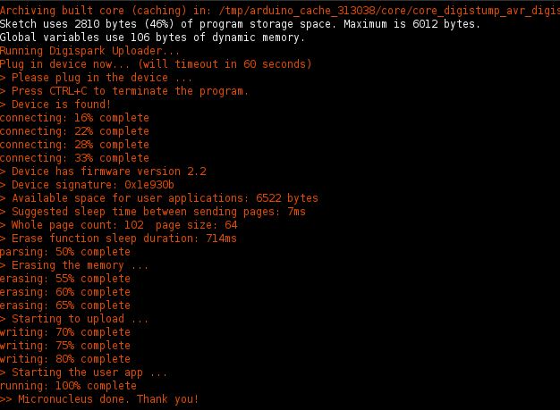

This article covers all the steps to setting up a Digispark Attiny85 board to function as a USB rubber ducky using Arduino! these boards are extremely cheap, and are entirely reusable, making excellent additions to a penetration testing toolkit. in adition to penetration testing, they can also be used to automate beneficial tasks as shown later in this article.

The first thing I did after purchasing my Digispark was to install the
Arduino IDE. On linux you can install the arduino package from your
usual package manager, although if the provided package isn’t up to date you
can download the latest package from here instead:
arduino.cc/en/Main/Software
Next is to make sure that the libusb driver package is installed. It is also
recommended to install the development package too, since it includes
libusb-config which is needed later.
Once the drivers were installed I had to make sure that the udev rules were set, since linux tends to need udev rules in order to keep usb devices read-only. There were already rules available from Digistump’s website, and so I simply placed those in /etc/udev/rules.d/49-micronucleus.rules
sudo echo '
SUBSYSTEMS=="usb", ATTRS{idVendor}=="16d0", ATTRS{idProduct}=="0753", MODE:="0666"
KERNEL=="ttyACM*", ATTRS{idVendor}=="16d0", ATTRS{idProduct}=="0753", MODE:="0666", ENV{ID_MM_DEVICE_IGNORE}="1"
' > /etc/udev/rules.d/49-micronucleus.rules Here is the section of the website for more details: Digistump Wiki, Linux Troubleshooting
To be on the safe side I then reload the rules
sudo udevadm control --reload-rulesThe next steps are to open the Arduino IDE and install the digispark board. First I add the URL for the board manager I need by going to File>Preferences and then pasting the following link into Additional Boards Managers URLs.
http://digistump.com/package_digistump_index.json
Then I install the board manager by going to Tools>Board>Board Manager and searching for Digistump AVR Boards. Then enable Digispark (Default - 16.5 MHz) under Tools>Board.
The guide from Digistump says that it isn’t necessary to change the programmer that you are using, but to be on the safe side I went to Tools>Programmer and selected the Micronucleus programmer which becomes available after intsalling the Digistump AVR Boards.
Unfortunately though, the version of the Micronucleus driver that you get from Digistump is actually outdated in their provided .json for the board manager. The solution here is to compile a new driver from Micronucleus’s github repository. Then to replace the board manager’s micronucleus file with the new one. You can delete the micronucleus folder later if you wish.
git clone https://github.com/micronucleus/micronucleus.git
cd micronucleus
cd commandline
make
chmod +x micronucleus
mv ~/.arduino15/packages/digistump/tools/micronucleus/2.0a4/micronucleus micronucleus.old
cp micronucleus ~/.arduino15/packages/digistump/tools/micronucleus/2.0a4/
rm -rf ~/micronucleus Lastly I restarted Arduino just to be safe, since I had just modified one of the files it was using.
At this point I was able to compile to my Digispark, so to test it I went to File>Examples and loaded some sample code called DigisparkKeyboard, compiled it, plugged in my device when prompted, and it compiled smoothly.

To make sure everything I had done was successful I then closed Arduino, opened up vim, and plugged in my Digispark for it to type the default “Hello Digispark!”
To make the payload the options are endless, although due to the size limit on the Digispark it isn't possible to fit entire payloads on the device itself, so this is where you would want to host the payload elsewhere and have the Digispark download it with a command.
For PowerShell payloads you can use the WebClient.DownloadString method to download a .ps1 file for executing on the machine. However other options include using curl, wget, or git, depending on the situation and operating system.
Many of the common pranks and attacks for this tool have already been turned into Digispark payloads by CedArctic, and can be used for inspiration for delivering new payloads.
GitHub Digispark Ducky Scripts by CedArctic
One of the drawbacks to rubber duckies is that the method of delivering payloads requires keypresses which lead to the command prompt, terminal, or powershell using common shortcuts. If these programs are unavailable, the script is unable to run, and so by protecting these programs with a password prompt prevents the device from being able to execute malicious code.
Another drawback is that the rubber duck relies on having physical access to the device. By requiring devices and their ports to be in locations that are inaccessible, an attacker is unable to plug a rubber duck into vulnerable devices without unnoticed.